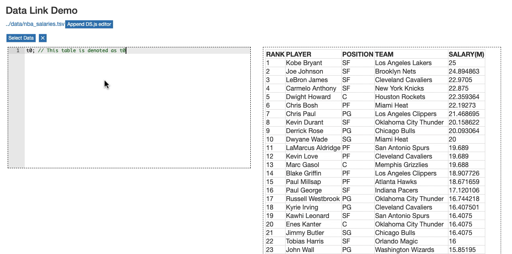
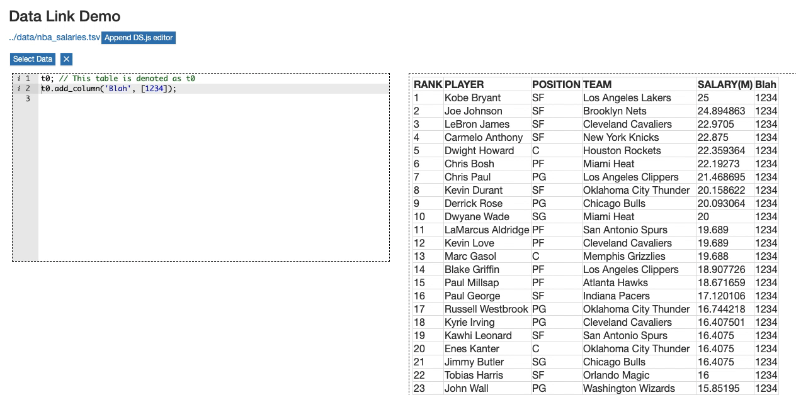
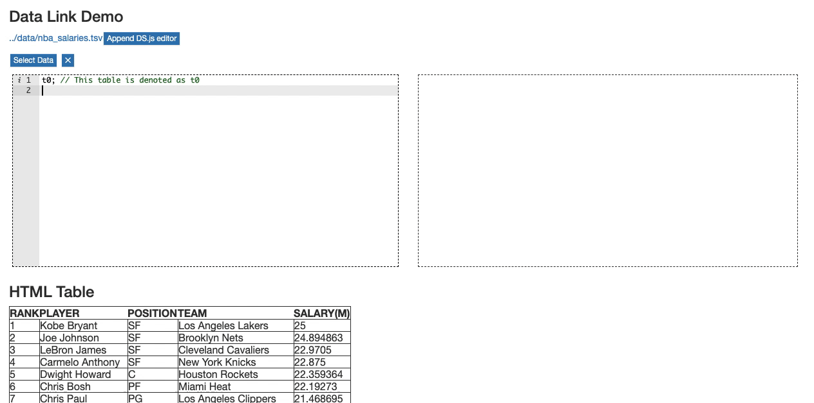
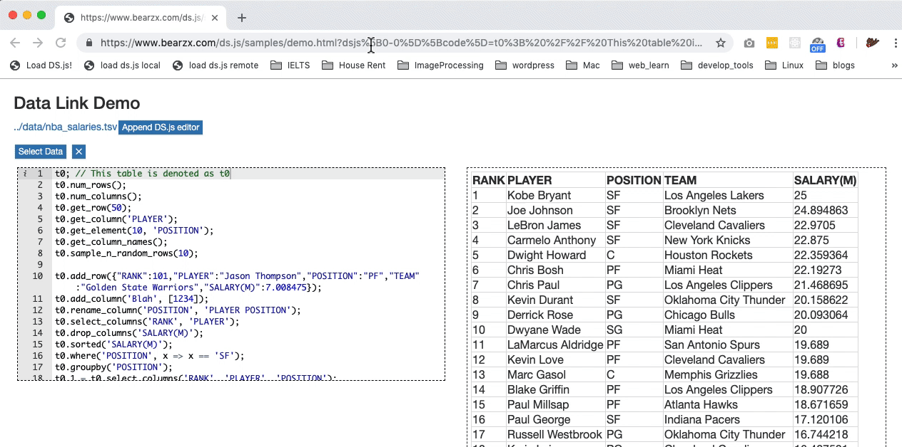

ds.js
DS.js is a bookmarklet that converts any webpage with tabular datasets into an environment to learn basic Data Science programming. More details can be found in our UIST2017 research paper DS.js: Turn Any Webpage into an Example-Centric Live Programming Environment for Learning Data Science.
Installation
Simply drag this link to your bookmark bar and you are all set.
DS.js Workflow
Here we show a typical workflow of using DS.js to put lightweight environments under tabular datasets and program inside it.
Detect Tabular Datasets
Simply click on the DS.js bookmarklet to put DS.js environments under csv/tsv links or HTML tables.
GIF Demo

Program with table.js API
Manipulate the parsed datasets with dataframe style programming APIs.
GIF Demo

Visualize Data
Create visualizations with table.js, which wraps vega APIs.
GIF Demo 
Preview from Code to Data or vice versa
Get hints about the usage of table.js APIs with previews.
Code to Data Preivew
Move the editor cursor to a table.js manipulation function and press ⌘ + B to preview its effect.
GIF Demo 
Data to Code Preview
When the output pane is showing a table, click on any cell to get in-context suggestions on available table.js APIs.
GIF Demo 
Share your code via URLs
Copy the URL of the webpage with capsulated DS.js code and send it to others to share your work.
GIF Demo 
table.js APIs
table.js is compiled from src/table.ts TypeScript source file. Here we show some short descriptions on its public APIs.
| Function | is for … |
|---|---|
convert(cast: Function) |
convert all the elements with a cast function (e.g. parseInt) |
converted(cast: Function) |
functional version of convert |
auto_convert() |
|
read_table_csv_sync(url: string) |
|
read_table_tsv_sync(url: string) |
|
Demo Vlogs
TODO
Example Pages
A made-up webpage with example code to show the table.js APIs can be found here.
Build Instructions
TODO
License
MIT